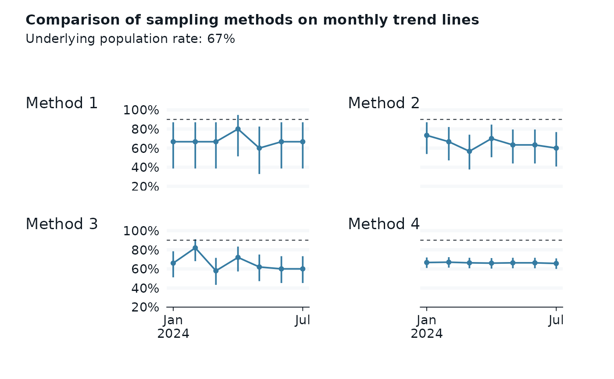

library(dplyr)
#>
#> Attaching package: 'dplyr'
#> The following objects are masked from 'package:stats':
#>
#> filter, lag
#> The following objects are masked from 'package:base':
#>
#> intersect, setdiff, setequal, union
library(RPamisc)
library(ggblanket)
library(glue)
library(gt)
library(purrr)
library(ggplot2)
library(reactable)
library(patchwork)
library(palmerpenguins)
set_blanket()
demo_data_raw <-
penguins |>
filter(!is.na(flipper_length_mm)) |>
mutate(
short_bill_flag = if_else(bill_length_mm < 45, 1, 0),
long_bill_flag = if_else(bill_length_mm >= 45, 1, 0),
short_flipper_flag = if_else(flipper_length_mm <= 209, 1, 0),
long_flipper_flag = if_else(flipper_length_mm > 209, 1, 0)
)
demo_data_summary <-
demo_data_raw |>
summarise(
#.by = c(species),
n = n(),
short_bill = sum(short_bill_flag, na.rm = TRUE),
long_bill = sum(long_bill_flag, na.rm = TRUE),
short_flipper = sum(short_flipper_flag, na.rm = TRUE),
long_flipper = sum(long_flipper_flag, na.rm = TRUE)
) |>
mutate(
bill_rate = round(short_bill/n, 2),
flipper_rate = round(short_flipper/n, 2)
#rate = round(long_flipper/n, 2)
)
demo_aggregate <- function(.data) {
results <-
.data |>
summarise(
#.by = c(species),
n = n(),
short_bill = sum(short_bill_flag, na.rm = TRUE),
long_bill = sum(long_bill_flag, na.rm = TRUE),
short_flipper = sum(short_flipper_flag, na.rm = TRUE),
long_flipper = sum(long_flipper_flag, na.rm = TRUE)
) %>%
mutate(
bill_rate = round(short_bill/n, 2),
flipper_rate = round(short_flipper/n, 2)
#rate = round(long_flipper/n, 2)
) %>%
arrange(desc(bill_rate), n)
results
}
methods_table <- tribble(
~method_name, ~sample_size, ~population, ~data_source,
"Method 1", 15, "All encounters", "OSP PBI",
"Method 2", 30, "Primary Care", "VA REDCap (manual chart reviews)",
"Method 3", 50, "All encounters", "OSP PBI",
"Method 4", 300, "Primary Care", "OSP PBI",
)
knitr::kable(methods_table)
| Method 1 |
15 |
All encounters |
OSP PBI |
| Method 2 |
30 |
Primary Care |
VA REDCap (manual chart reviews) |
| Method 3 |
50 |
All encounters |
OSP PBI |
| Method 4 |
300 |
Primary Care |
OSP PBI |
demo_data_raw |>
gg_histogram(
x = flipper_length_mm,
#x = bill_length_mm,
col = species,
#facet2 = island,
facet = species
)
#> Scale for colour is already present.
#> Adding another scale for colour, which will replace the existing scale.
#> `stat_bin()` using `bins = 30`. Pick better value with `binwidth`.

set.seed(911)
month <- seq(as.Date("2024-01-01"), as.Date("2024-07-01"), "month")
demo_sample <- function(.data, month, size = 15) {
# https://stackoverflow.com/questions/50977337/calling-prop-test-function-in-r-with-dplyr
.data |>
slice_sample(n = size) |>
demo_aggregate() |>
mutate(month = month, .before = 1) |>
mutate(rate = map2(short_flipper, n, ~ prop.test(.x, .y, conf.level=0.95) %>%
broom::tidy())) %>%
tidyr::unnest(rate) %>%
select(
month,
n,
short_flipper,
everything()
)
}
# method 1
# sample of 15/month
method_1_data <-
month |>
map(~ demo_sample(demo_data_raw, .x, size = 15)) |>
bind_rows()
set_blanket()
trend_plot <- function(.data, subtitle = "Method 1: sample 15") {
.data |>
gg_pointrange(
#subtitle = subtitle,
x = month,
y = estimate,
ymin = conf.low,
ymax = conf.high,
x_label = "",
y_label = "",
#y_label = "% Short Flipper",
y_labels = scales::percent,
x_breaks = c(as.Date("2024-01-01"), as.Date("2024-07-01")),
y_breaks = c(.2, .4, .6, .8, 1),
y_expand_limits = c(.40, 1),
#linewidth = 1,
) +
geom_line() +
geom_hline(yintercept = .9, linetype = 'dashed')
}
p1 <-
method_1_data |>
trend_plot()
p1

# method 2
# sample of 30/month
method_2_data <-
month |>
map(~ demo_sample(demo_data_raw, .x, size = 30)) |>
bind_rows()
p2 <-
method_2_data |>
trend_plot(subtitle = "Method 2: sample 30")
#p2
# method 3
# sample of 0/month
method_3_data <-
month |>
map(~ demo_sample(demo_data_raw, .x, size = 50)) |>
bind_rows()
p3 <-
method_3_data |>
trend_plot(subtitle = "Method 3: sample 50")
#p3
# method 4
# sample of 300/month
method_4_data <-
month |>
map(~ demo_sample(demo_data_raw, .x, size = 300)) |>
bind_rows()
p4 <-
method_4_data |>
trend_plot(subtitle = "Method 4: sample 300")
#p3
p1 + p2 + p3 + p4 +
plot_layout(
2, 2,
axes = "collect", axis_titles = "collect") +
plot_annotation(
title = "Comparison of sampling methods on monthly trend lines",
subtitle = glue("Underlying population rate: {scales::percent(demo_data_summary$flipper_rate)}"),
tag_levels = "1",
tag_prefix = "Method ")

results_reactable <- function(.data) {
.data |>
select(-c(contains("bill"), long_flipper, estimate:parameter, method, alternative)) |>
reactable(
columns = list(
conf.low = colDef(format = colFormat(digits = 3)),
conf.high = colDef(format = colFormat(digits = 3))
)
)
}
results_table <- function(
.data,
#title = "Method 1",
#description = "this is the description",
#data_source = "OSP PBI") {
method_table) {
.data |>
select(-c(contains("bill"), long_flipper, estimate:parameter, method, alternative)) |>
gt() |>
tab_header(
title = method_table$method_name,
subtitle = glue("Monthly sample of {method_table$sample_size} cases from {method_table$population}")
) |>
tab_footnote(footnote = md(glue("Data source: {method_table$data_source}"))) |>
fmt_percent(columns = c("flipper_rate", "conf.low", "conf.high"), decimals = 0) |>
fmt_date(columns = c("month"), date_style = "yMMM") |>
cols_merge_n_pct("short_flipper", "flipper_rate") |>
cols_merge(columns = c("conf.low", "conf.high"), pattern = "[{1}, {2}]") |>
cols_label(
conf.low = "95% CI",
short_flipper = "Number Met (%)"
) |>
cols_align(
align = "center",
columns = c("short_flipper", "conf.low")
)
}
method_1_data |>
results_table(methods_table[1, ])
| Method 1 |
| Monthly sample of 15 cases from All encounters |
| month |
n |
Number Met (%) |
95% CI |
| Jan 2024 |
15 |
10 (67%) |
[39%, 87%] |
| Feb 2024 |
15 |
10 (67%) |
[39%, 87%] |
| Mar 2024 |
15 |
10 (67%) |
[39%, 87%] |
| Apr 2024 |
15 |
12 (80%) |
[51%, 95%] |
| May 2024 |
15 |
9 (60%) |
[33%, 83%] |
| Jun 2024 |
15 |
10 (67%) |
[39%, 87%] |
| Jul 2024 |
15 |
10 (67%) |
[39%, 87%] |
method_2_data |>
results_table(methods_table[2, ])
| Method 2 |
| Monthly sample of 30 cases from Primary Care |
| month |
n |
Number Met (%) |
95% CI |
| Jan 2024 |
30 |
22 (73%) |
[54%, 87%] |
| Feb 2024 |
30 |
20 (67%) |
[47%, 82%] |
| Mar 2024 |
30 |
17 (57%) |
[38%, 74%] |
| Apr 2024 |
30 |
21 (70%) |
[50%, 85%] |
| May 2024 |
30 |
19 (63%) |
[44%, 79%] |
| Jun 2024 |
30 |
19 (63%) |
[44%, 79%] |
| Jul 2024 |
30 |
18 (60%) |
[41%, 77%] |
method_3_data |>
results_table(methods_table[3, ])
| Method 3 |
| Monthly sample of 50 cases from All encounters |
| month |
n |
Number Met (%) |
95% CI |
| Jan 2024 |
50 |
33 (66%) |
[51%, 78%] |
| Feb 2024 |
50 |
41 (82%) |
[68%, 91%] |
| Mar 2024 |
50 |
29 (58%) |
[43%, 72%] |
| Apr 2024 |
50 |
36 (72%) |
[57%, 83%] |
| May 2024 |
50 |
31 (62%) |
[47%, 75%] |
| Jun 2024 |
50 |
30 (60%) |
[45%, 73%] |
| Jul 2024 |
50 |
30 (60%) |
[45%, 73%] |
method_4_data |>
results_table(methods_table[4, ])
| Method 4 |
| Monthly sample of 300 cases from Primary Care |
| month |
n |
Number Met (%) |
95% CI |
| Jan 2024 |
300 |
200 (67%) |
[61%, 72%] |
| Feb 2024 |
300 |
201 (67%) |
[61%, 72%] |
| Mar 2024 |
300 |
199 (66%) |
[61%, 72%] |
| Apr 2024 |
300 |
198 (66%) |
[60%, 71%] |
| May 2024 |
300 |
199 (66%) |
[61%, 72%] |
| Jun 2024 |
300 |
199 (66%) |
[61%, 72%] |
| Jul 2024 |
300 |
197 (66%) |
[60%, 71%] |